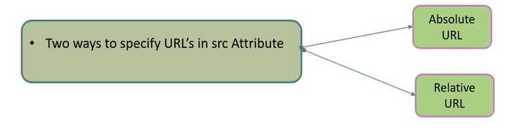
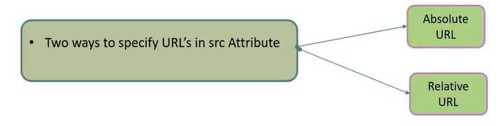

In this lesson, we are going to learn these HTML attributes:

 

We have got relative URL and relative URL, in which we can specify the path, or the src
Now it is image's absolute URL because it is taking external image's link address instead of the code's internal file
alt attribute is an ALTERNATIVE text showed when the image cannot be found or is broken with broken image icon

Now it is bigger than the previous image